АННОТАЦИЯ
Курсовая работа посвящена анализу географического распределения участников Всероссийской олимпиады студентов «Я – профессионал» по направлению «Компьютерные науки» за период IV–VIII сезоны (2020–2026). Использованы корреляционно-регрессионный анализ, t-тест, ANOVA, кластеризация k-means. Обработка в R, визуализация результатов. Выявлены тренды, факторы успеха регионов, построены прогнозные модели.
ВВЕДЕНИЕ
Актуальность исследования. В современном цифровом обществе развитие информационных технологий и подготовка высококвалифицированных кадров в области компьютерных наук приобретают стратегическое значение для обеспечения технологического суверенитета и конкурентоспособности Российской Федерации. Всероссийская олимпиада «Я – Профессионал» выступает одним из наиболее авторитетных механизмов выявления и поддержки талантливой молодежи, способствуя формированию кадрового резерва IT-отрасли. Географическое распределение участников отражает уровень развития региональных образовательных экосистем и позволяет выявить диспропорции между федеральными округами. Результаты исследования могут быть использованы федеральными органами исполнительной власти для корректировки политики поддержки олимпиадного движения и талантливой молодёжи.
Объект исследования – данные об участниках олимпиады «Я – Профессионал» по направлению «Компьютерные науки», агрегированные по регионам и сезонам.
Предмет исследования – статистические закономерности и изменения в географическом распределении участников, а также возможность группировки регионов по схожим характеристикам участия.
Цель работы – выявление основных изменений в географическом распределении участников олимпиады с использованием методов корреляционно-регрессионного анализа и алгоритма кластеризации k-means.
Задачи: исследовать предметную область; охарактеризовать структуру данных; выполнить предобработку и разведочный анализ; провести корреляционный анализ; построить регрессионные модели; выполнить кластеризацию регионов; визуализировать результаты; сравнить инструменты R и Glarus BI.
Новизна заключается в комплексном применении указанных методов именно к данным олимпиады «Я – Профессионал», что позволяет выявить скрытые закономерности и предложить типологию регионов.
Практическая значимость – полученные аналитические результаты могут быть использованы органами управления образованием и региональными органами исполнительной власти при планировании мероприятий по поддержке IT-направлений.
ГЛАВА 1. ТЕОРЕТИЧЕСКИЕ ОСНОВЫ СТАТИСТИЧЕСКОЙ ОБРАБОТКИ ДАННЫХ
Рассмотрены предметная область олимпиады, основные методы статистического анализа (описательная статистика, корреляционный и регрессионный анализ, кластеризация), возможности языка R и программного обеспечения Glarus BI, а также сравнение указанных инструментов.
ГЛАВА 2. ПРАКТИЧЕСКАЯ РЕАЛИЗАЦИЯ ИССЛЕДОВАНИЯ
2.1. Описание используемых данных
Эмпирическую базу составили официальные итоговые таблицы олимпиады за IV–VIII сезоны (формат PDF). После выверки и конкатенации получен датасет, содержащий сведения о количестве медалистов, победителей, призёров и общем числе дипломантов по регионам РФ. Внешние данные о численности студентов и количестве вузов добавлены из статистических сборников Росстат (2024 г.). Производные показатели: доля медалистов, доля победителей, темп прироста дипломантов.
2.2. Исследовательский анализ данных (EDA)
{kind=link}
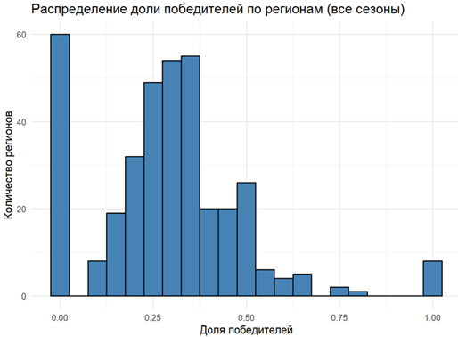
{kind=link}
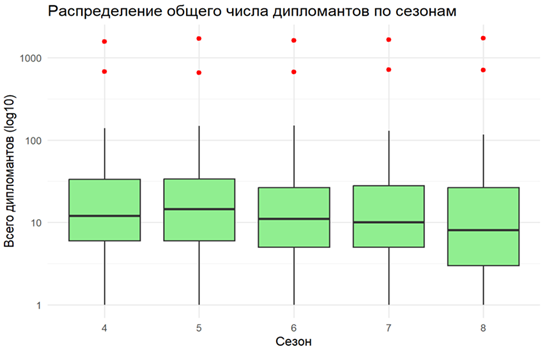
{kind=link}
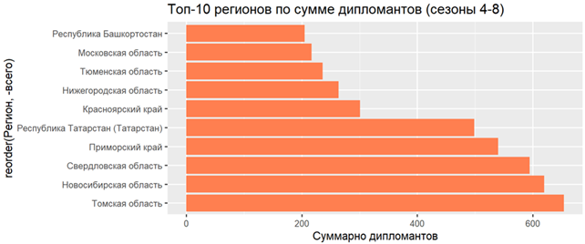
{kind=link}
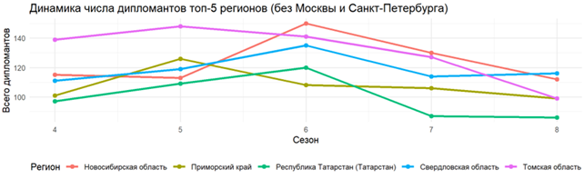
{kind=link}
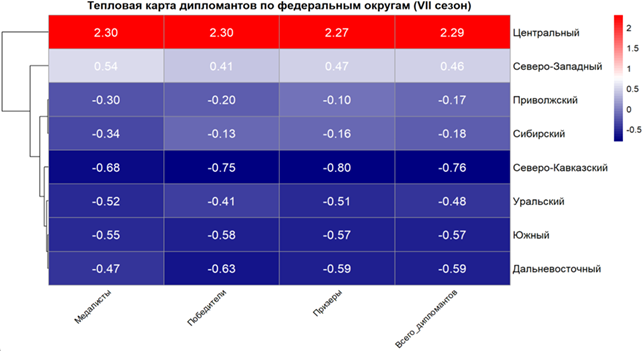
{kind=link}
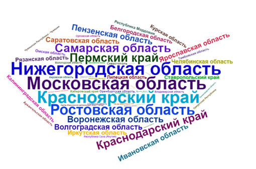
{kind=link}
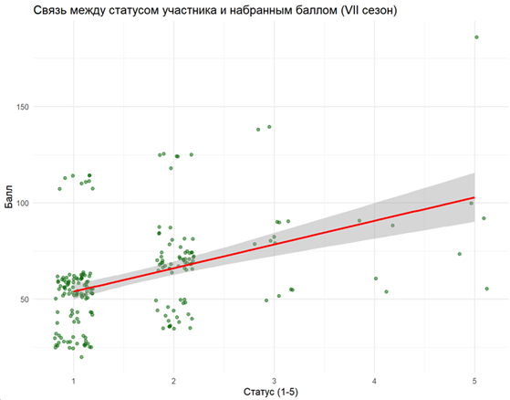
{kind=link}
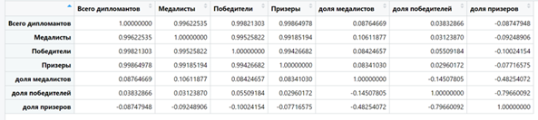
{kind=link}
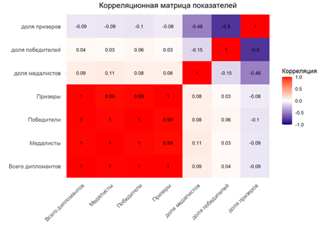
{kind=link}
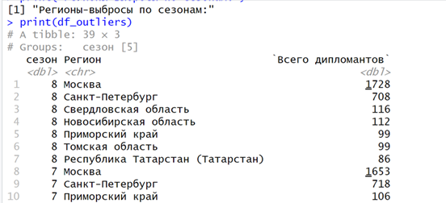
{kind=link}
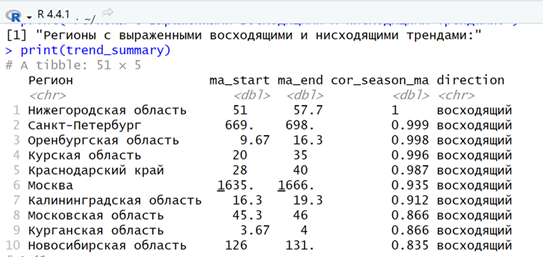
{kind=link}
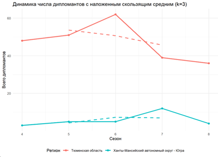
2.3. Применение методов статистического анализа
2.3.1. Описательная статистика
| Группа | Среднее | Медиана | Дисперсия | Станд. отклонение |
|---|---|---|---|---|
| Лидеры | 543,4 | 141,0 | 373 159 | 611,0 |
| Срединные | 42,0 | 36,0 | 595,1 | 24,4 |
| Аутсайдеры | 7,5 | 7,0 | 29,2 | 5,4 |
2.3.2. Проверка гипотез
{kind=link}
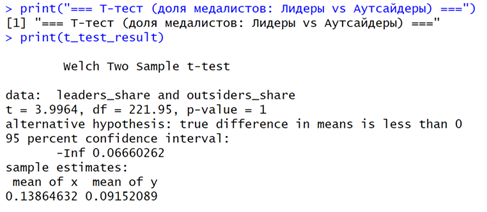
{kind=link}
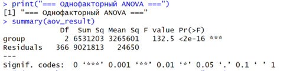
2.3.3. Регрессионный анализ
Модель: \( \text{дипломанты}_i = -12.45 + 0.0134\cdot\text{students\_total}_i + 2.18\cdot\text{universities\_count}_i \). \(R^2=0.69\). Коэффициент при численности студентов значим (p<0.001), при количестве вузов – нет.
2.4. Кластеризация регионов методом k-means
{kind=link}
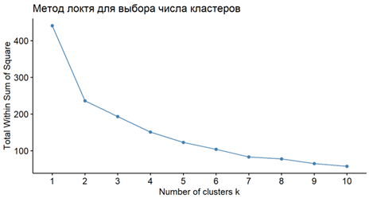
{kind=link}
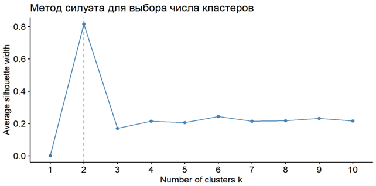
{kind=link}
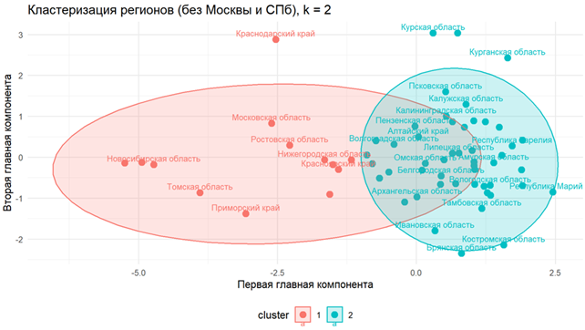
Выбрано k=2. Кластер 1 – крупные образовательные центры (Новосибирская, Свердловская, Томская области и др.), Кластер 2 – остальные регионы.
ГЛАВА 3. АВТОМАТИЗАЦИЯ И ОТЧЁТНОСТЬ В АНАЛИЗЕ ДАННЫХ
Рассмотрены генерация отчётов в RMarkdown (PDF, HTML, Word) и создание интерактивных дашбордов в Glarus BI. Предложена интеграция R для статистических расчётов и Glarus BI для оперативного мониторинга.
ЗАКЛЮЧЕНИЕ
В ходе работы выполнен комплексный анализ географического распределения участников олимпиады. Подтверждено, что численность студентов – основной фактор результативности. Кластеризация выявила два типа регионов. Полученные результаты могут быть использованы организаторами олимпиады и региональными органами образования для корректировки политики поддержки талантливой молодёжи.
СПИСОК ИСТОЧНИКОВ
- Официальные итоговые таблицы олимпиады «Я – профессионал» IV–VIII сезонов (2020–2026).
- Росстат. Численность студентов и количество вузов по субъектам РФ, 2024. – Режим доступа: https://rosstat.gov.ru (дата обращения 20.05.2026).
ПРИЛОЖЕНИЯ
Полные листинги кода на R приведены в тексте курсовой работы. Датасеты и скрипты доступны в репозитории.